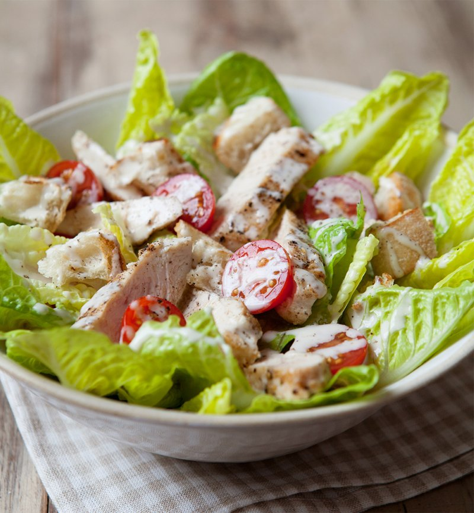

Классический рецепт салата Цезарь известен практически всем, кто его пробовал хоть единожды. Считается, что главную роль в нем играет специальная заправка.
Но и про остальные ингредиенты забывать не стоит.
Вам не обойтись без свежего салата романо. Сухарики лучше сделать самим. А куриное филе надо приготовить так, чтобы оно получилось достаточно нежным и сочным.
ИНГРЕДИЕНТЫ
- 2 средних филе куриной грудки
- 1 большой кочан салата романо
- 200 г пармезана
- соль, свежемолотый черный перец
Для заправки:
- 1 яйцо
- 1-2 зубчика чеснока
- 6–8 филе анчоуса
- по 1,5 ст. л дижонской горчицы и белого винного уксуса
- по 1 ч. л. вустерского соуса, соли и белого перца
- щепотка сахара
- 150 мл растительного рафинированного масла
- 100 мл оливкового масла «экстра вирджин»
Для сухариков:
- 100 мл растительного масла
- 2 зубчика чеснока
- 1 небольшая чиабатта

ПОШАГОВЫЙ РЕЦЕПТ ПРИГОТОВЛЕНИЯ
Шаг 1
Натрите куриное филе солью и перцем, сварите на пару, 20 мин. или до полной готовности. Остудите и нарежьте тонкими ломтями.
Шаг 2
Для заправки разбейте яйцо в стакан погружного блендера, добавьте раздавленный и очищенный чеснок, анчоусы, уксус, дижонскую горчицу, соль, сахар, перец и оливковое масло. Взбейте до однородности. Долейте рафинированное масло, взбейте в густую эмульсию. Попробуйте, при необходимости приправьте еще солью, сахаром, уксусом или горчицей.
Шаг 3
Для сухариков взбейте блендером до однородности масло и чеснок, посолите.
Шаг 4
Нарвите хлеб на удобные для еды небольшие кусочки. Полейте маслом, хорошенько перемешайте и запеките при 200 °С, примерно 5 мин. Хлеб не должен быть пересушен.
Шаг 5
Для салата половину пармезана нарежьте ножом для чистки овощей крупными лепестками. Остальной сыр натрите на мелкой терке.
Шаг 6
Нарвите листья романо руками, удаляя слишком твердые и горчащие основания листьев. Кусочки листьев должны быть довольно крупными, но удобными для еды.
Шаг 7
Смешайте листья романо с парой ложек соуса и тертым пармезаном, разложите по тарелкам. Выложите курицу налистья, посыпьте сухариками и лепестками пармезана. Остальной соус подайте отдельно.